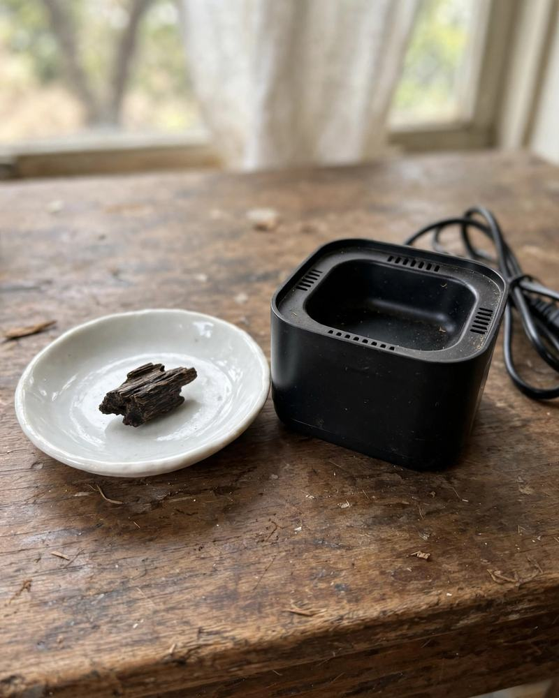

沉香的香气成分在不同温度下挥发：低温挥发的是轻的成分，凉意、花香；中温挥发的是甜香；高温挥发的是醇厚、木香。
一次烧到高温，只能闻到混合的味道，层次全没了。分段升温，每一段闻到的都不一样，一块料的价值才能闻出来。
120 度是入门温度，凉意和花香最先出来。惠安系的料在这个温度表现很好：清甜凉意、花香明显。
这个温度下香味清淡，适合静静闻。不要着急升温，先把低温的层次闻清楚。
升到 150 度，甜香开始出来，蜜韵、花果香比较明显。海南料的蜜韵在这个温度很突出。
150 度是很多料的黄金温度：香味饱满，层次清楚，不容易糊。新手可以在这个温度多停一会。
180 度，醇厚、药香、木香出来了。星洲系的料在这个温度表现很好：浓郁饱满，留香长。
这个温度下香味比较浓，闻的时间别太长。闻几秒，停一停，再闻。
220 度是收尾温度，香韵的最后层次：木香、焦糖香。超过 220 度容易糊，糊味会把所有香韵盖住。
收尾之后，碎料基本烧透了，换一块新的。不要反复烧同一块，烧透的料再烧只有糊味。
电熏炉用完要及时清理：隔片上的残渣倒掉，炉面用干布擦干净。残渣留在炉面上，下次加热会糊，影响香味。
清理的时候等炉子凉透再动手，别烫着手。炉子不用的时候收好，防尘防潮。
惠安系的料：低温段多停留，120、150 度是重点，凉意和花香在低温段。星洲系的料：中高温段多停留，180、220 度是重点，醇厚和药香在高温段。
这只是参考，具体看那块料的表现。同一产区的不同料，温度表现也有差别。亲自试过，才知道每块料适合哪个温度。
| 温度 | 香韵层次 | 适合 |
|---|---|---|
| 120 度 | 凉意、花香 | 惠安系，低温段重点 |
| 150 度 | 甜香、蜜韵 | 多数料，黄金温度 |
| 180 度 | 醇厚、药香、木香 | 星洲系，中高温段重点 |
| 220 度 | 木香、焦糖香，收尾 | 收尾，别超过 |